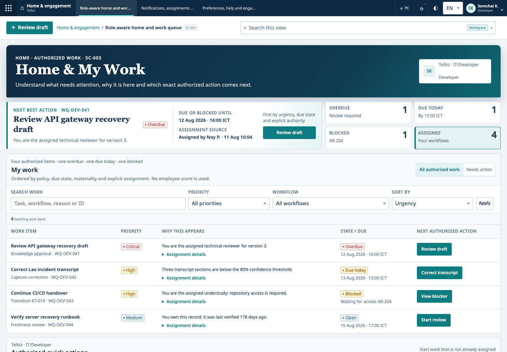

Selected work context
Developers send useful WhatsApp messages, incident threads, voice explanations and authorized technical evidence into one review queue.
Replaces: scattered copy-and-paste collectionKnowledge Transition is B2B software that captures selected know-how from WhatsApp, incidents, voice notes and technical evidence—then turns it into human-approved guides, cited answers and accountable handovers.

This is not a consulting report or another blank-page document library. It is a shared software workspace that moves operational know-how from everyday work into controlled reuse and handover.
Developers send useful WhatsApp messages, incident threads, voice explanations and authorized technical evidence into one review queue.
Replaces: scattered copy-and-paste collectionThe platform structures the candidate, exposes uncertainty and requires an authorized person to approve the exact version and access boundary.
Adds: owner · source · version · review dateThe next developer asks a real troubleshooting question and receives supported steps, exact sources, limits and missing evidence.
Avoids: unsupported AI instructionsManagers track ownership, freshness, successor practice and remaining single-expert risk for each critical role or service.
Shows: what is safe · stale · blocked · missingThe safe rollback details exist only in one experienced developer’s WhatsApp messages and memory.
When only one developer knows why a service fails, which rollback is safe or where the hidden dependency lives, every incident, onboarding and handover becomes slower and riskier.
Operational know-how lives across chats, terminals, source control, monitoring tools and personal memory.
Asking experts to leave their workflow and write a diary creates friction precisely when time is scarce.
Teams need trusted evidence, ownership, review, freshness and a clear path from expert to understudy.
Start with one recurring incident. The platform coordinates what software can prepare and what people must decide.
A developer forwards only the useful message range, voice note and authorized evidence without leaving the existing work channel.
The expert corrects uncertain meaning; an accountable reviewer decides whether the exact version is safe to reuse.
The next developer searches or asks a question and receives supported guidance linked to approved source evidence.
The manager assigns successor practice and sees which knowledge is current, blocked or still dependent on one expert.
Knowledge can carry sensitive operational context. The platform is designed to keep source boundaries, human approval and evidence visible instead of hiding them behind automation.
Platform knowledge, server operations, troubleshooting, source code, CI/CD and monitoring create a dense continuity problem—and a measurable place to prove value.
Begin with underserved Lao operational teams while keeping English and Thai foundations ready for regional expansion.
Use channel-first capture and governed review instead of requiring experts to maintain another standalone diary.
Knowledge management stores content. Knowledge Transition is designed to manage continuity: capture, authority, transfer, freshness and risk.
People change roles, systems evolve and incidents repeat. Continuity is an ongoing operating requirement, not a one-time migration.
Start with technical teams and high-risk workflows, then expand into cross-functional handover, governance and enterprise controls.
Every reviewed capture strengthens retrieval, onboarding, transition and risk visibility inside that customer boundary.
Provenance, workflow fit, multilingual quality and control evidence matter as much as model capability.
Tenant provisioning and role-based access in isolated experimental development.
Authorized · not startedChannel-first ingestion, transcript confidence, sensitive-data review and approval.
Locked until gateGrounded answers, citations, handover workflows, freshness and risk monitoring.
Locked until evidenceReal users, real workflows and measured usefulness under explicit privacy and operating agreements.
Human evidence requiredStage honesty: the interactive prototype and implementation design are substantial; representative-user validation and production evidence are not yet complete.
If your technical team repeatedly rediscovers troubleshooting context or depends on one expert for a critical service, we want to validate a controlled pilot with you. We also welcome investors and advisors who understand enterprise SaaS, security and Southeast Asian operations.